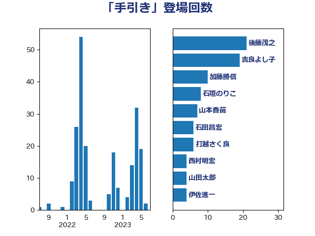

単語「手引き」

| 後藤茂之 | 自由民主党 | 21 回 |
| 吉良よし子 | 日本共産党 | 19 回 |
| 加藤勝信 | 自由民主党 | 10 回 |
| 石垣のりこ | 立憲民主党 | 8 回 |
| 山本香苗 | 公明党 | 7 回 |
| 石田昌宏 | 自由民主党 | 6 回 |
| 打越さく良 | 立憲民主党 | 6 回 |
| 西村明宏 | 自由民主党 | 4 回 |
| 山田太郎 | 自由民主党 | 4 回 |
| 伊佐進一 | 公明党 | 4 回 |
| 自見はなこ | 自由民主党 | 3 回 |
| 梅村聡 | 日本維新の会 | 3 回 |
| 岸田文雄 | 自由民主党 | 3 回 |
| 山岡達丸 | 立憲民主党 | 3 回 |
| 鳩山二郎 | 自由民主党 | 2 回 |
| 高木真理 | 立憲民主党 | 2 回 |
| 遠藤良太 | 日本維新の会 | 2 回 |
| 西村康稔 | 自由民主党 | 2 回 |
| 舩後靖彦 | れいわ新選組 | 2 回 |
| 竹谷とし子 | 公明党 | 2 回 |
| 竹内真二 | 公明党 | 2 回 |
| 川田龍平 | 立憲民主党 | 2 回 |
| 小倉將信 | 自由民主党 | 2 回 |
| 中野英幸 | 自由民主党 | 2 回 |
| 齋藤健 | 自由民主党 | 1 回 |
| 鰐淵洋子 | 公明党 | 1 回 |
| 阿部知子 | 立憲民主党 | 1 回 |
| 谷公一 | 自由民主党 | 1 回 |
| 細田健一 | 自由民主党 | 1 回 |
| 秋野公造 | 公明党 | 1 回 |
| 漆間譲司 | 日本維新の会 | 1 回 |
| 池田佳隆 | 自由民主党 | 1 回 |
| 横山信一 | 公明党 | 1 回 |
| 松下新平 | 自由民主党 | 1 回 |
| 本田顕子 | 自由民主党 | 1 回 |
| 末松信介 | 自由民主党 | 1 回 |
| 日下正喜 | 公明党 | 1 回 |
| 小池晃 | 日本共産党 | 1 回 |
| 国定勇人 | 自由民主党 | 1 回 |
| 倉林明子 | 日本共産党 | 1 回 |
| 佐藤英道 | 公明党 | 1 回 |
| 佐々木紀 | 自由民主党 | 1 回 |
| 伊藤岳 | 日本共産党 | 1 回 |
| 中川康洋 | 公明党 | 1 回 |